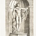
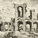
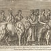
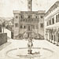
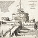
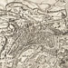

Itineraries
Virtual itineraries are mini-exhibitions designed by scholars that allow you to travel through the collection along a particular path based on a theme, location, collection, or artist. These allow for a more specialized, but still lively and accessible, introduction to selected works from the collection, draw attention to particular intellectual questions associated with these prints, and serve as a new mode of scholarly publishing. We welcome submissions of itineraries: please first send a query to speculum@uchicago.edu.
1. The Belvedere Cortile: An Early Museum of Ancient Sculpture
Beginning in 1506, Bramante designed the Belvedere Cortile, an outdoor garden space to house Pope Julius II's celebrated collection of ancient sculpture. Renaissance prints allowed far-flung artists to study these statues as rare artifacts and models for the representation of human form.
2. Beatrizet and the Speculum
Arriving in Rome around 1540, Nicolas Beatrizet was hired by both Antonio Salamanca and his chief rival Antonio Lafreri to make plates of Roman monuments. These two publishers finally, in 1553, had the good sense to join forces. Beatrizet also worked with two other publishers before 1558, the year he began to publish his own plates. This itinerary―chronological rather than geographical―will follow Beatrizet's work through a dozen productive years.
3. Viewing Ruins
Rome's crumbling monuments fascinated Renaissance artists. For printmakers, the shattered forms of the Colosseum, the labyrinthine Baths of Diocletian, and fragmentary reliefs strewn around the Capitoline supplied palpable way to think about the present as much as the past.
4. Prints and Ritual in Renaissance Rome
Much of Rome was built to accommodate the performance of ritual. Interest in the ordinary and extraordinary celebrations of events ranging from daily masses to the magnificent triumphal entries for visiting potentates extended to a fascination with ancient ritual as pictured on the stone friezes and ruins seen everywhere in Christian Rome.
5. The Campidoglio Engraved
The changing face of the Campidoglio in Rome, also known as the ancient Capitoline Hill, reinvented in the Renaissance and home to a collection of important ancient statues.
6. Castel Sant'Angelo: A Military Itinerary Through Rome and the Speculum
One of the largest buildings in Rome, Castel Sant'Angelo is a distinguished alalgam of ancient Roman, midieval, and early modern elements. This imposing structure features significantly in the plans of Rome―reconstructions of the ancient city, as well as sixteenth and eighteenth century plans―that are part of this collection.
7. Love and the Gods
To the Renaissance eye, Roman antiquity seemed to celebrate erotic freedom. Sculptured reliefs and cameos depicting the love-affairs of the gods, or the worship of Priapus and Bacchus, were recorded and imitated by printmakers, while Rosso Fiorentino and others created the engraving-series The Loves of the Gods, appreciated for its frank sexuality, visual wit, and antiquarian allusion.
8. The Eternal City: Maps of Rome in the Speculum
The Chicago Speculum opens with a sequence of printed maps intended to provide the overarching context of the Eternal City. Rome was by no means a straightforward subject, marked as it was by countless superimposed layers of history and myth. This itinerary, a temporal as well as spatial tour through the city, will track various strategies that artists and printmakers employed to balance the existing urban reality with the city of the memory and the imagination.